1 - Linguagem HTML
Definição de HTML
HTML (HyperText Markup Language), linguagem de marcação de hipertexto padrão para estruturar página web e seu conteúdo, que consiste numa série de elementos (tags + conteúdo), que informam ao navegador web como o conteúdo deve ser exibido, rotulando-os como “título”, “parágrafo”, “link”, etc.
Definição de HTML
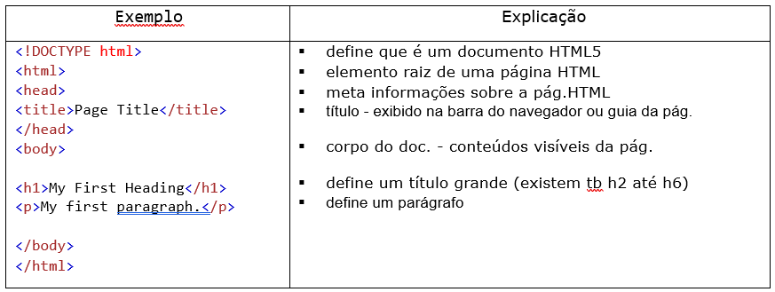Elemento HTML
Elemento é tudo desde a tag inicial até a tag final. Exemplo: “< tagname >” O conteúdo vai aqui... “< /tagname >” Elemento vazio é aquele que não possui conteúdo. Exemplo: “< br >”
Navegador da WEB
O navegador (Chrome, Edge, Firefox, Safari) tem a função de ler e exibir corretamente documentos HTML.
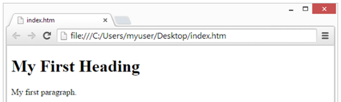Estrutura da página HTML
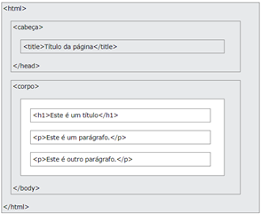O conteúdo da seção < body > será exibido no navegador.
Ver e inspecionar o código-fonte HTML
Clicar no botão direito do mouse e selecionar “exibir código-fonte da página” ou opção similar e também poderá escolher inspecionar para verificar de quais elementos são feitos, podendo editar dinamicamente o HTML, bem como o CSS da página.
Elementos HTML aninhados
Os elementos podem conter outros elementos, isso se chama aninhamento. No exemplo abaixo, o < html > contem < body > que contem < h1 > e < p >.
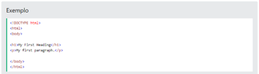Grafia das tags
As tags podem ser maiúsculas ou minúsculas (< p > ou < P >), porem o padrão recomentado é letra minúscula.
Atributos HTML
Atributos são permitidos a todos os elementos, com função de lhe fornecerem informações adicionais. São sempre especificados na tag inicial, geralmente em pares (nome=”valor”).
Atributo href
A tag < a > define um hiperlink. O atributo href especifica o URL da página para a qual o link leva:
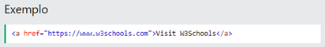Atributo src
A tag < img > é usada para incorporar uma imagem em uma página HTML. O src atributo especifica o caminho para a imagem a ser exibida, podendo ser externa ou hospedada no próprio site.
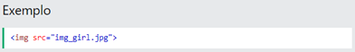URL absoluta – links para imagem externa, de outro site (exemplo: src="https://www.w3schools.com/images/img_girl.jpg"). Para esse tipo deve haver cuidado quanto a direitos autorais ou remoção ou alterações repentinas do site.
URL relativo – links para uma imagem hospedada no site (exemplo: src="/images/img_girl.jpg"). Este tipo de URL é o mais recomendável, sempre que possível, pois não serão quebrados se mudar o domínio.
Atributo de largura
A tag < img > deve conter também os atributos width e height, que correspondem à largura e altura da imagem (em pixels).
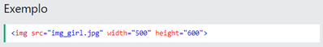Atributo alternativo
O atributo obrigatório “alt” para a tag < img > especifica um texto alternativo para uma imagem, se a imagem por algum motivo não puder ser exibida, causado por conexão lenta, erro no “src” atributo ou no caso utilização de leitor de tela pelo usuário.
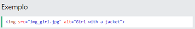Atributo de estilo
O atributo “style” adiciona estilos a um elemento (cor, fonte, tamanho e muito mais)
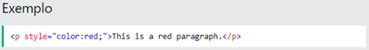Atributo lang
O atributo < lang > é obrigatório para declaração do idioma da página, para ajudar os mecanismos de pesquisa e navegadores.
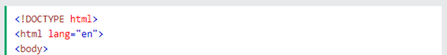Atributo do título
O atributo < title > define algumas informações extras sobre o elemento. Será exibido como um dica de ferramenta quanto você passar o mouse sobre o elemento.

Observações sobre atributos:
1 - utilizar sempre atributos em minúsculas
2 - utilizar aspas para citações, pois em algumas vezes é necessário.
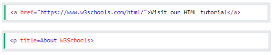3 - as aspas poderão ser simples ou duplas, sendo estas as mais usadas.
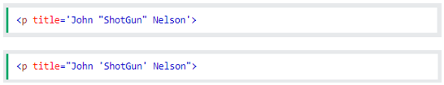Comentários em HTML
Um comentário atribui informações sobre um elemento ou vários. Pode ser adicionado em qualquer lugar do código (HTML), utilizando
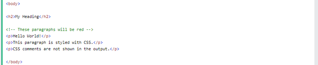2 - Linguagem CSS
Definição de CSS
O CSS (Cascading Style Sheets) significa folhas de estilo em cascata. É a linguagem utilizada para estilizar um documento HTML, descrevendo como os elementos devem ser exibidos. A estilização inclui design, layout, e variações de exibição para diferentes dispositivos e tamanhos de telas.
O CSS pode controlar o layout de várias páginas da web de uma só vez. Pode também ser utilizadas várias folhas de estilo para estilizar uma página HTML. São armazenadas em arquivo com extensão CSS.
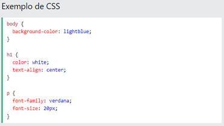Importância do CSS
O HTML nunca foi planejado para conter tags para formatas uma página web, mas sim para descrever seu conteúdo. Quando lhe foram adicionadas tags e atributos de configuração, os desenvolvedores web tiveram grande dificuldades e o processo tornou-se caro e demorado.
O CSS veio para solucionar esse problema. Criado pela World Wide Web Consortium (W3C), assumiu o papel de formatação da página HTML.
Com isso, um arquivo de folha de estilo externo pode alterar a aparência de um site inteiro, alterando apenas um arquivo.
Sintaxe CSS
Uma regra CSS consiste em um seletor e um bloco de declaração.
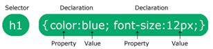O seletor aponta para o elemento HTML a ser estillizado.
O bloco de declaração contém uma ou mais declarações separadas por ponto e vírgula.
Cada declaração inclui um nome de propriedade CSS e um valor, separados por dois pontos.
Múltiplas declarações CSS são separadas por ponto e vírgula e os blocos de declaração são cercados por chaves.
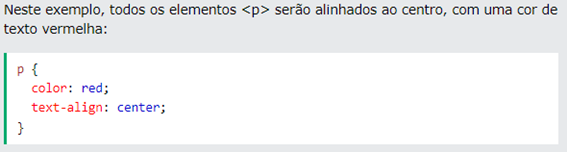Seletores CSS
Os seletores CSS encontram (selecionam) os elementos HTML a serem estilizados, podendo ser divididos em cinco categorias:
1- Seletores simples (selecione elementos com base no nome, id, classe)
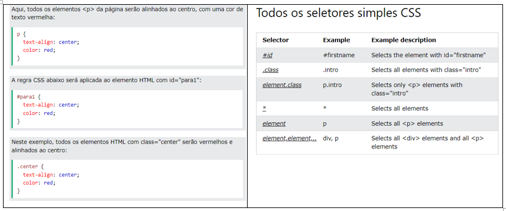2- Seletores combinadores (selecionam elementos com base em um relacionamento específico entre eles)
3- Seletores de pseudoclasse (selecionam elementos com base em um determinado estado)
4- Seletores de pseudoelementos (selecionam e estilizam uma parte de um elemento)
5- Seletores de atributos (selecionam elementos com base em um atributo ou valor de atributo)
Como adicionar CSS
Um navegador formata o documento HTML de acordo com as informações contidas na folha de estilos.
Existem três maneiras de inserir CSS: externo, interno, embutido.
CSS externo
Uma folha de estilos externa pode alterar a aparência de um site inteiro, alterando apenas um arquivo. Cada página deve incluir uma referência ao arquivo de folha de estilo externo dentro do elemento < link >, na seção head.
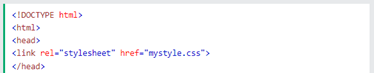A folha de estilo externa pode ser escrita em qualquer editor de texto e deve ser salva com extensão .css e não deve conter tags HTML.
CSS interno
Uma folha de estilo interna pode ser usada se uma única página HTML tiver um estilo único. É definido dentro do elemento
CSS embutido
Um estilo embutido pode ser usado para aplicar um estilo exclusivo a um único elemento. Para usar estilos embutidos, adicione o atributo style ao elemento relevante. O atributo style pode conter qualquer propriedade CSS.
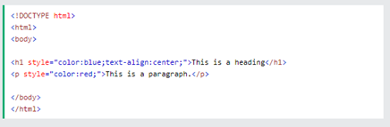Ordem de estilos
O estilo embutido tem a prioridade mais alta e substituirá os estilos externos e internos, que vem em seguida, e os padrões do navegador, que vem por último na prioridade.
Comentários CSS
Comentários são usados para explicar o código e podem ajudar quando você editar o código-fonte posteriormente. Eles são ignorados pelos navegadores.
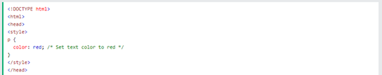Um comentário CSS é colocado dentro do < style > elemento e começa com /* e termina com */, em qualquer lugar do código (CSS) e pode abranger várias linhas.